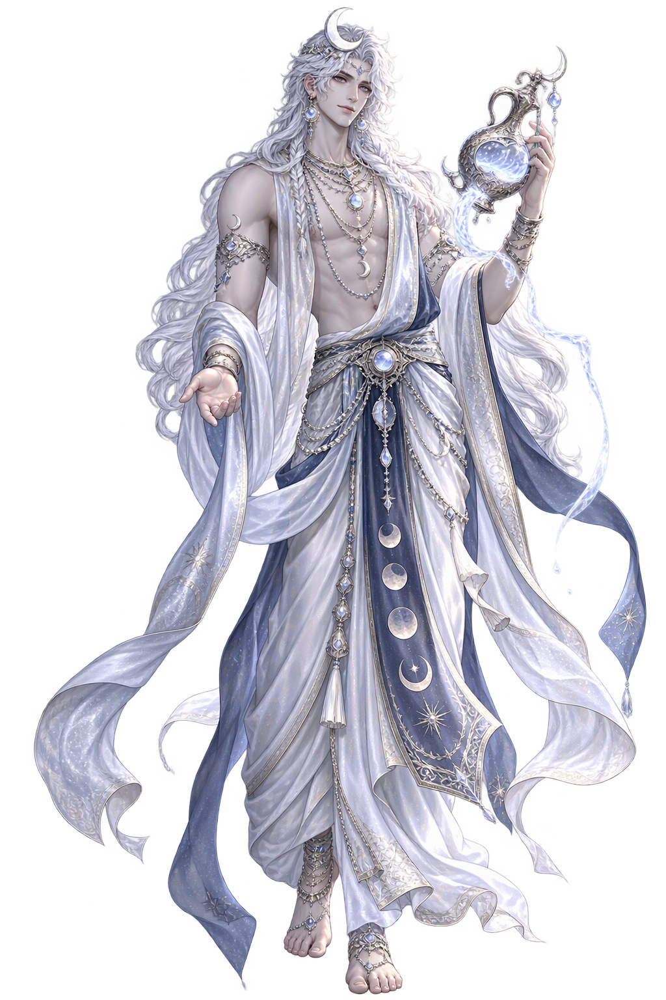
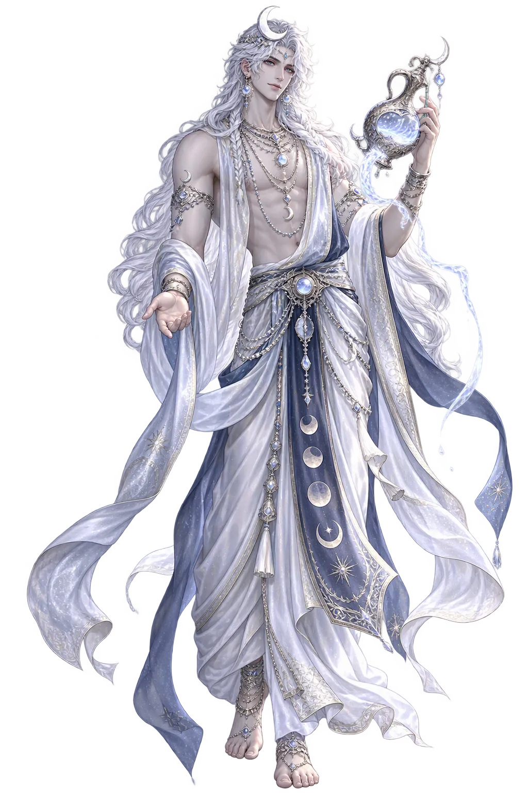

The Cult
The moon’s phases govern every fast and festival — Ekādaśī, the full-moon and new-moon rites are his calendar. The soma-pressing of the Vedic ritual is his oldest liturgy, remembered in every modern pūrṇimā.
Extended Lore
Etymology · Orthography · Cult · Iconography · Reception · Sources

From original script to canonical restoration — the full etymology page →
The name Candra reaches the modern world through scholarly transliteration of the sanskrit tradition. Because the conventional spelling uses only Latin letters, its canonical and ASCII forms coincide — the tradition it carries is in the name itself, not in diacritics.
Character-by-character philological analysis
| Character | Unicode | Name | Block | Phonetic Role |
|---|---|---|---|---|
| C | U+0043 | Latin Capital Letter C | Basic Latin | Same |
| — | N/A | Dropped character | Sanskrit orthography | Not written |
| a | U+0061 | Latin Small Letter A | Basic Latin | Same |
| n | U+006E | Latin Small Letter N | Basic Latin | Same |
| d | U+0064 | Latin Small Letter D | Basic Latin | Same |
| r | U+0072 | Latin Small Letter R | Basic Latin | Same |
| a | U+0061 | Latin Small Letter A | Basic Latin | Same |
This restoration reflects fidelity to the attested tradition, not recovered diacritics: every character of Candra already survives in ASCII. What the restoration preserves is the canonical spelling itself — the form scholarship standardised.
How the sacred was kept — rites, sanctuaries, remains
The moon’s phases govern every fast and festival — Ekādaśī, the full-moon and new-moon rites are his calendar. The soma-pressing of the Vedic ritual is his oldest liturgy, remembered in every modern pūrṇimā.
Candra rides the temple friezes as the lunar graha; the great crescents of the medieval Śiva temples of Karnataka and Tamil Nadu are his monumental form. The astronomical observatories of Jantar Mantar measure his cycles in stone.
How Candra was imaged across the ages
A pale, beautiful god in a chariot of white horses (or the antelope’s antler-crescent), holding a lotus and a club; the crescent on Śiva’s head is his most famous seat. The twenty-seven nakṣatras — his wives, the daughters of Dakṣa — attend him.
The name after its own age — transmission, translation, survival
Comparative mythology sets him beside Sin, Thoth, and Máni as the lunar god whose body is the calendar; and the Tārā-episode is cited in every study of the moon-god’s ‘sin’ — the waning written into myth as punishment. His name, through Monday and the lunar mansions, keeps the oldest astronomy alive in daily speech.
Candra fused with Soma in the Vedic period and with the astronomical moon (one of the nine grahas) in the medieval period. The Greeks of the Northwest compared him to Selene’s domain but found no single Olympian match; and the Buddhist lunar mansions (nakṣatras) kept his calendar alive across Asia.
The lunar calendar — every Hindu festival’s dating — is his monument; the Candravamśa genealogy made him the ancestor of the epic’s heroes. The crescent in Śiva’s hair is Hinduism’s most reproduced ornament; and ‘Monday’ (somavāra) still speaks his Vedic name in every Indian week.
What the written record preserves — and what it does not
The Devanagari form is चन्द्र, Candra — 'glittering, shining', a derivative of the root √cad, 'to shine': the glitter-word applied to the moon. Vedic Soma is the drink and its lunar god; Candra consolidates the moon's personhood in epic and Purāṇic usage, where he is the ancestor of the lunar dynasty (Candra-vaṃśa) and one of the nine grahas of medieval astrology. The Devanāgarī clusters न्द्र; the IAST Candra needs no diacritics — one of the few Sanskrit names English speakers already pronounce correctly. The written record keeps both moons, the soma-drink of the sacrifice and the lamp of the night.
What Candra means — beyond the dictionary
Candra: the glittering one, restored in plain letters that glitter on the screen. His waxing and waning need no diacritic — the phases are written in the name’s rhythm, two syllables that fill and empty like the moon they name.
Deep-dives into the cult, attestation, reception, and sources of Candra
Candra rides the temple friezes as the lunar graha; the great crescents of the medieval Śiva temples of Karnataka and Tamil Nadu are his monumental form. The full cult record →
The record rests on Purāṇic Tārā cycle (Matsya, Viṣṇu, Padma), Samudra Manthana cycle, Ṛgveda 9 (the Soma hymns), among 4 cited works. The full source apparatus →
Comparative mythology sets him beside Sin, Thoth, and Máni as the lunar god whose body is the calendar; and the Tārā-episode is cited in every study of the moon-god’s ‘sin’ — the waning written into myth as punishment. Reception & transformation →
A pale, beautiful god in a chariot of white horses (or the antelope’s antler-crescent), holding a lotus and a club; the crescent on Śiva’s head is his most famous seat. The iconography →
The Devanagari form is चन्द्र, Candra — 'glittering, shining', a derivative of the root √cad, 'to shine': the glitter-word applied to the moon. The Original Script note →
The philological foundations of the record
Every claim on this page is grounded in established scholarship. The orthographic restorations follow disciplinary convention. The etymological chain follows the best available reference works. This is not invention — it is resurrection through scholarship.
You have traced the name from its earliest attestation to its canonical restoration. Now return to the myth. The story is where the name lives.
Back to Lore